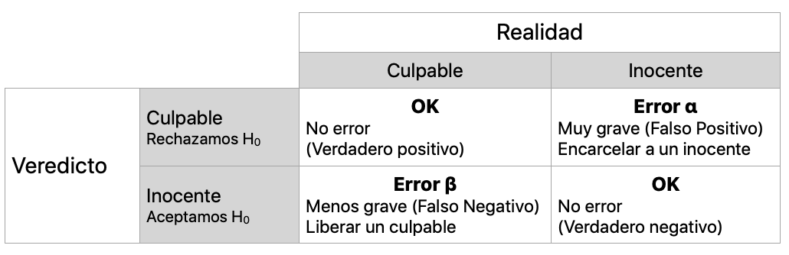
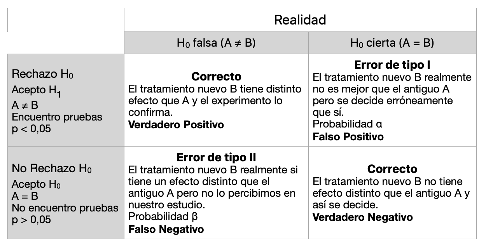
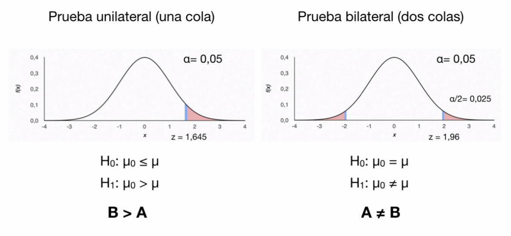
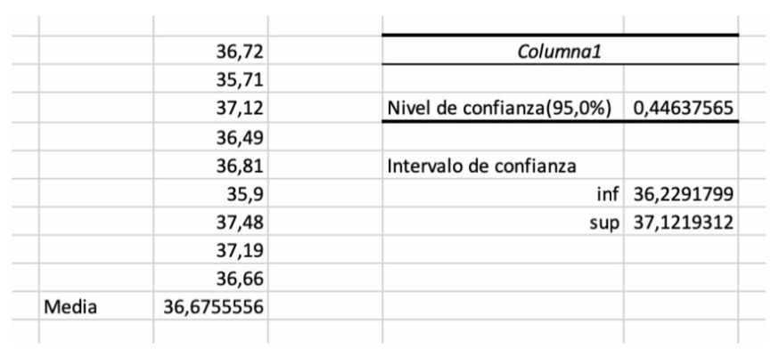
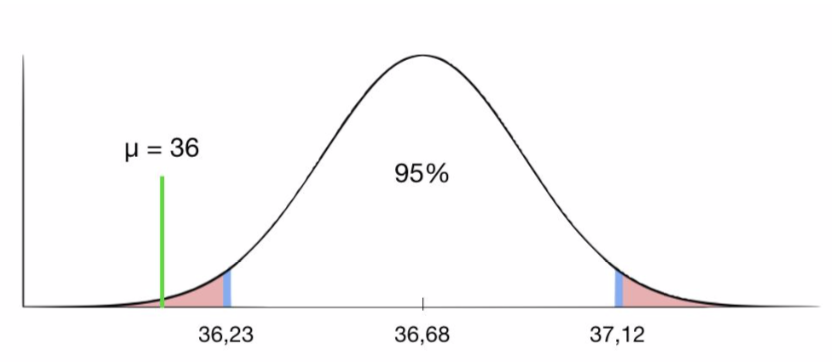
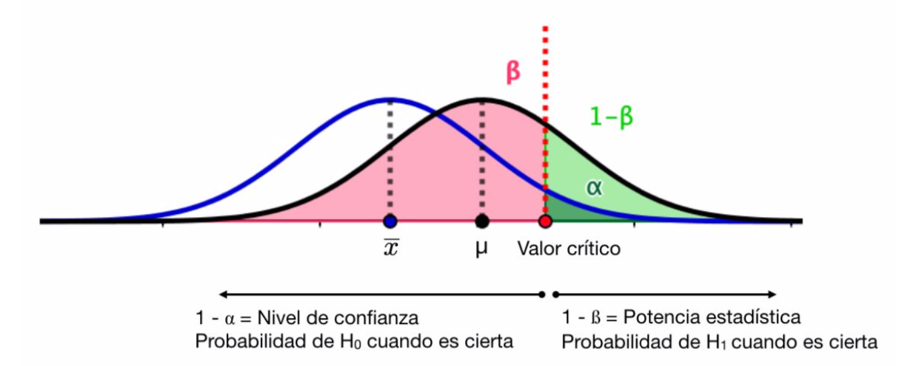

4.5 Contrastes de Hipótesis
El último paso en el estudio de la Inferencia Estadística que vamos a abordar es el llamado Contraste de Hipótesis, cuyo principal objetivo es tomar decisiones sobre si determinadas hipótesis o supuestos a partir de muestras, pueden extrapolarse a la población con un determinado nivel de confianza.
Un contraste o test de hipótesis es el procedimiento estadístico mediante el cual se investiga la veracidad o falsedad de una hipótesis acerca de algún parámetro poblacional.
Llamaremos hipótesis nula \(H_0\) a la hipótesis que se formula y que se desea contrastar y llamaremos hipótesis alternativa \(H_1\) a cualquiera otra situación que sea contraria a la hipótesis nula . Se llaman pruebas de hipótesis a los procedimientos que permiten decidir si una hipótesis se acepta o rechaza o determinar si las muestras observadas difieren significativamente de los resultados esperados.
Como en todo estudio, podemos cometer errores debidos a que la información muestral nos da a pensar en algo distinto a las hipótesis debido a que la muestra, por el motivo que sea, no es lo suficientemente representativa de la población estudiada.
Tomemos como ejemplo juzgar a un individuo por la presunta comisión de un delito. Consideramos como hipótesis nula \(H_0\) que el individuo es inocente (no se encuentran indicios de culpabilidad). La hipótesis alternativa (contraria y excluyente a la hipótesis nula) sería \(H_1\) que el individuo es culpable (se encuentran indicios de culpabilidad).
- \(H_0\): inocente
- \(H_1\): culpable
Así, los datos pueden refutar la hipótesis nula (que es inocente). Es la hipótesis que se acepta si las pruebas no indican lo contrario. Rechazarla por error tiene graves consecuencias (condenar a un inocente). Sin embargo, la hipótesis alternativa (es culpable) no debería ser aceptada sin una gran evidencia a favor. Rechazarla por error tiene consecuencias consideradas menos graves que la anterior (liberar a un delincuente). Es decir, el contraste de hipótesis consiste en evidencias de que es culpable (hipótesis de investigación). Si no se encuentran, se concluye que es inocente.
Se distinguen entonces 2 tipos de error al tomar la decisión sobre un contraste de hipótesis: el error \(\alpha\) y el error \(\beta\).
Siguiendo con nuestro ejemplo, en esta tabla se muestran las posibilidades:

Es decir, para condenar al individuo (rechazar la hipótesis nula) se deben tener pruebas muy convincentes. En Estadística, para aceptar o rechazar la hipótesis nula, se tiene en cuenta un valor p (generalmente < 0,05).
Este valor p que se va a obtener al realizar un contraste de hipótesis debe entenderse como la medida de la verosimilitud de la muestra según el modelo teórico inicial \(H_0\) un valor p grande (> 0,1) expresa que la muestra es verosímil (no extrema) según la hipótesis inicial, por lo que no estamos en condiciones de rechazarla. Por contra, un valor p pequeño (< 0,05) indica que la muestra es poco verosímil (extrema) según \(H_0\) por lo que debemos rechazar la hipótesis inicial $H_0 $en favor de su alternativa \(H_1\).
Consideremos ahora que estamos comparando la eficacia clínica de 2 fármacos A y B. Establecemos las hipótesis:
- \(H_0\): No existen diferencias significativas en la eficacia clínica de dos fármacos A y B (A=B)
- \(H_1\): Existen diferencias en la eficacia clínica de dos fármacos A y B (A̸ \(\neq\) B)

Tenemos entonces:
- Error tipo I (alfa): rechazamos la \(H_0\) siendo ésta verdadera (se concluye que existe diferencia cuando en realidad no la hay).
- Error tipo II (beta): no rechazamos la \(H_0\) siendo ésta falsa (se concluye que no se ha podido encontrar encontrar una diferencia que existe en la realidad).
La potencia estadística (1 -\(\beta\)) es la capacidad del estudio para detectar una diferencia si ésta existe realmente. \(\beta\) es la probabilidad de cometer un error beta (tipo II).
El nivel de confianza (1 - \(\alpha\)) es la probabilidad a priori de que el intervalo de confianza (IC) a calcular contenga al verdadero valor del parámetro. Es la probabilidad de un error alfa (tipo I).
La situación ideal sería elegir una prueba (contraste) para el que las dos probabilidades de error sean cero, pero esto no es posible. Además, para un tamaño muestral fijo, si una de las dos probabilidades de error disminuye entonces la otra aumenta. La única forma de que las dos probabilidades de error disminuyan a la vez es aumentando el tamaño de la muestra.
4.5.1 Contrastes bilaterales y unilaterales
Tenemos 2 formas de establecer la hipótesis de investigación (hipótesis alternativa \(H_1\)):
- Bilateral: cualquiera de los dos parámetros a comparar puede ser mayor o menor que el otro (no hay dirección) (A ≠ B).
- Unilateral: cuando se considera que uno debe ser mayor que el otro (dirección de las diferencias) (A < B).
Siguiendo con el ejemplo de comparar la eficacia de 2 fármacos A y B, la prueba unilateral se utiliza cuando se pretende determinar si el fármaco nuevo B es más eficaz que el clásico A, es decir, tan sólo interesa una de las direcciones de la comparación (B > A) ya que interesa demostrar que B sea más efectivo que A. Sin embargo, la prueba bilateral se utiliza para determinar si los dos fármacos A y B difieren en su efectividad clínica (A ≠ B).
La siguiente imagen ilustra estas 2 opciones:

En rojo tenemos la región de rechazo de la hipótesis nula para un contraste unilateral y para uno bilateral. Como hemos comentado, un valor p pequeño (en la zona de rechazo) indica que la muestra es poco verosímil (extrema) segun \(H_0\) por lo que debemos rechazar la hipótesis nula en favor de su alternativa \(H_1\). En el caso contrario, un valor p grande (fuera de la zona de rechazo) expresa que la muestra es verosímil según la hipótesis inicial, por lo que no estamos en condiciones de rechazarla.
Para aclarar estos conceptos, vamos a considerar el siguiente ejemplo:
Una empresa farmacéutica vende un producto cuyos efectos tienen una duración que se distribuye normalmente con media \(\mu_0\) = 36 horas y desviación típica poblacional \(\sigma\) = 1 hora. La empresa está probando una variante del producto diseñada para cambiar la duración media pero no la desviación típica. Para contrastar si esta variante mejora el producto original se probó en 9 pacientes y se obtuvieron las siguientes duraciones: 36.72, 35.71, 37.12, 36.49, 36.81, 35.90,37.48, 37.19 y 36.66 horas. ¿Respaldan estos datos un cambio en la duración media de la variante del producto?
Consideremos las siguientes hipótesis:
- \(H_0\): no hay cambio, es decir \(\mu\) = \(\mu_0\) = 36
- \(H_1\) sí́ hay cambio en la duración media \(\mu\) \(\neq\) 36
Como no estamos suponiendo que la media \(\mu\) de la variante es mayor o menor que la media del original \(\mu_0\), es un contraste bilateral.
Calculamos con Excel© el intervalo de confianza para \(\mu\) al 95% con los datos de la muestra (Análisis de datos > Estadística descriptiva > Activar Nivel de confianza para la media)

Así, el intervalo de confianza al 95% viene dado por (36,23 , 37,12) y la media \(\mu\) = 36 queda en la zona de rechazo (valor p < 0,05). Si \(H_0\) es cierta, hay una probabilidad del 95% de que la media \(\mu\) = 36 pertenezca a ese intervalo.

De este modo, \(\mu\) = 36 es un valor muy improbable si suponemos que la hipótesis \(H_0\) es cierta por lo que rechazamos la hipótesis nula y concluimos que la muestra respalda que la variante del producto tiene una duración media distinta de la del producto original.
El sencillo ejemplo anterior ilustra el procedimiento general para contrastes de hipótesis. Una vez establecida la hipótesis nula \(H_0\) elegimos una medida D de la discrepancia entre los datos muestrales y la hipótesis \(H_0\). Esta medida se denomina estadístico de contraste y es una variable aleatoria que es función de la muestra con distribución conocida cuando \(H_0\) es cierta. Los valores del estadístico de contraste correspondientes a discrepancias grandes (valor p < 0.05) llevan a rechazar \(H_0\) y forman la llamada región de rechazo. El conjunto complementario de valores se conoce como región de aceptación.
4.5.2 Nivel de confianza y potencia estadística
Vamos a visualizar los valores \(\alpha\) y \(\beta\), los errores asociados y el nivel de confianza (1 - \(\alpha\)) y la potencia estadística (1 - $).
En la imagen vemos un contraste de hipótesis unilateral para la media poblacional \(\mu\) a partir de los datos de una muestra de media \(\overline{x}\).
Suponemos que la distribución de datos es normal y tenemos la curva asociada a la distribución muestral (\(\overline{x}\))en azul y a la poblacional (\(\mu\)) en negro con el valor crítico para una significación \(\alpha\) (nivel de confianza 1 - \(\alpha\)).

Una vez fijado el nivel de significación \(\alpha\) (color verde oscuro) que es la probabilidad de cometer un Error de tipo I (rechazar \(H_0\) cuando \(H_0\) es cierta), el valor crítico asociado a \(\alpha\) determina el valor de \(\beta\) (color rojo), es decir, la probabilidad de cometer un error de tipo II (aceptar \(H_0\) cuando \(H_0\) es falsa).
El error tipo II depende del parámetro \(\mu\). Cuanto más cerca se encuentre éste del valor supuesto bajo la hipótesis nula, mayor es la probabilidad de ocurrencia del error tipo II. Debido a que el verdadero valor de \(\mu\) es desconocido al hacer la presunción de la hipótesis alternativa, la probabilidad del error tipo II, en contraste con el error tipo I , no se puede calcular.
Para cada contraste de hipótesis que analicemos veremos el estadístico concreto con el que se mide la discrepancia entre la muestra observada y la hipótesis nula, y la correspondiente región de rechazo. Estos contrastes garantizan que la probabilidad de error tipo I sea a lo sumo \(\alpha\) y que la probabilidad de rechazar \(H_0\) cuando \(H_0\) es falsa, es decir la potencia, sea máxima con lo que la probabilidad de error tipo II va a ser mínima.
Así pues, el procedimiento de un contraste de hipótesis consiste en:
Formular adecuadamente la hipótesis nula \(H_0\) y la hipóteis alternativa \(H_1\).
Elegir un nivel de significación α y un tamaño muestral n.
Buscar el estadístico de contraste óptimo.
Determinar la región de rechazo.
Calcular el valor del estadístico de contraste elegido en la muestra concreta.
Comprobar el valor del estadístico de contraste está en la zona de rechazo o no.
Otra forma de realizar el contraste de hipótesis consiste en calcular el nivel de significación crítico o valor p, es decir, la probabilidad de obtener una discrepancia mayor o igual que la observada en la muestra cuando \(H_0\) es cierta.
4.5.3 Tamaño de la muestra
No hay que confundir un contraste de hipótesis con una demostración matemática ya que el resultado de un contraste de hipótesis es una decisión razonable a partir de los datos de una muestra que debe relativizarse. Hay que tener muy en cuenta que los contrastes de hipótesis tienden a aportar resultados no significativos cuando se aplican a muestras de pequeño tamaño. Por contra, con muestras muy numerosas se pueden obtener resultados significativos por pequeñas evidencias contra \(H_0\).
Así el tamaño muestral es de gran importancia a la hora de efectuar un contraste de hipótesis. Las muestras pequeñas están sometidas a una gran variabilidad. De este modo, la mayor parte de las circunstancias teóricamente posibles pueden ocurrir con una probabilidad aceptable. Por otro lado, las muestras grandes presentan un comportamiento muy regular. Así, cualquier pequeña desviación respecto al valor medio teórico correspondiente a \(H_0\) puede hacer que se rechaze la hipótesis nula.
El cálculo del tamaño de la muestra depende del nivel de significación \(\alpha\), la potencia deseada de la prueba 1 - \(\beta\), la variabilidad del resultado y el tamaño del efecto.
El tamaño del efecto es la diferencia en el parámetro de interés que representa una diferencia clínicamente significativa. Al igual que el margen de error en las aplicaciones de intervalo de confianza, el tamaño del efecto se determina en función de criterios clínicos o prácticos y no de criterios estadísticos.
Lectura recomendada: https://www.fisterra.com/formacion/metodologia-investigacion/determinacion-tamano-muestral/